画像にリンクがはってあるものは、クリックすると別窓で大きめサイズが表示されます。
[マリアン]
所在地；ミッドガルド連合軍駐屯地（222,283） |
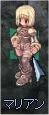  |
[ルーゲン教官]
所在地；ミッドガルド連合軍駐屯地（261,284） |
| 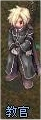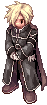 |
[ブリンク]
所在地；ミッドガルド連合軍駐屯地中央建物内 |
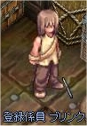  |
[エリックス]
所在地；ミッドガルド連合軍駐屯地中央やや西 |
 |
[ディエゴ]
所在地；ミッドガルド連合軍駐屯地兵舎前（266,263） |
| 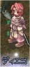 |
[駐屯地警備兵]
所在地；ミッドガルド連合軍駐屯地9時方向 |
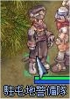  |
[ルーカス]
所在地；ミッドガルド連合軍駐屯地兵舎内 |
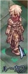  |
[ダービー]
所在地；ミッドガルド連合軍駐屯地兵舎内 |
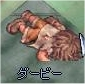  |
[ジャン]
所在地；ミッドガルド連合軍駐屯地（162,298） |
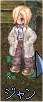  |
[ゼラル]
所在地；ミッドガルド連合軍駐屯地8時方向 |
| 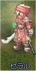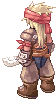 |
[アルベルト]
所在地；マヌクフィールド01（man_fild01:80,248） |
| 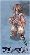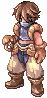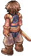 |
[オトゥ]
所在地；ミッドガルド連合軍駐屯地（123,290） |
| 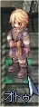 |
back
(c) Gravity Co., Ltd. & Lee MyoungJin(studio DTDS). All rights reserved.
(c) GungHo Online Entertainment, Inc. All Rights Reserved.
当コンテンツの再利用（再転載・配布など）は、禁止しています。